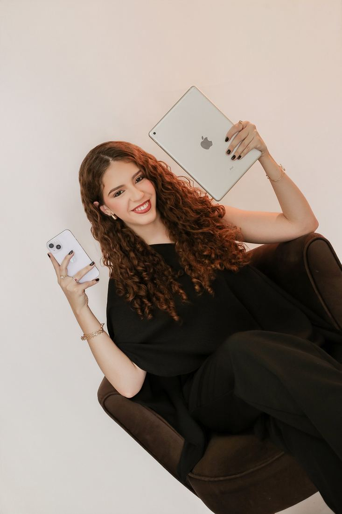
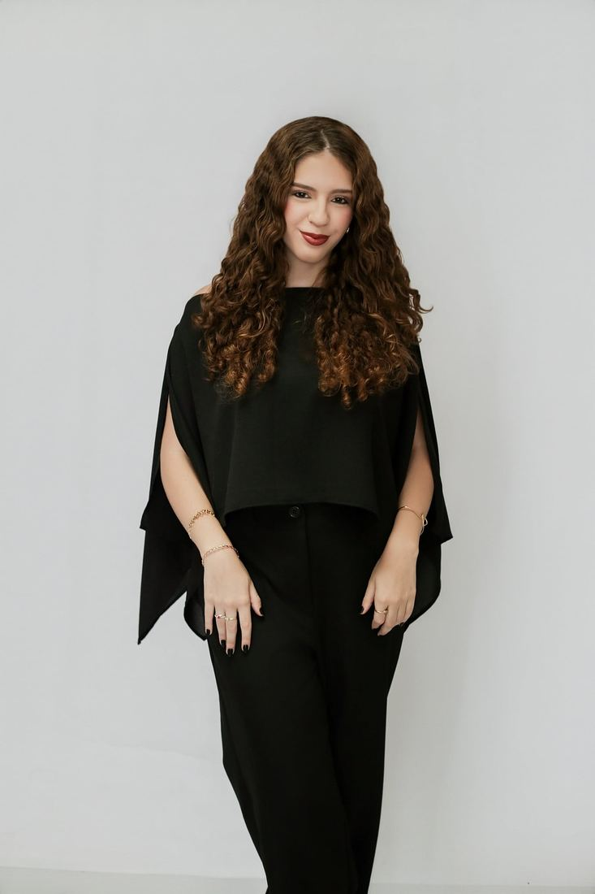
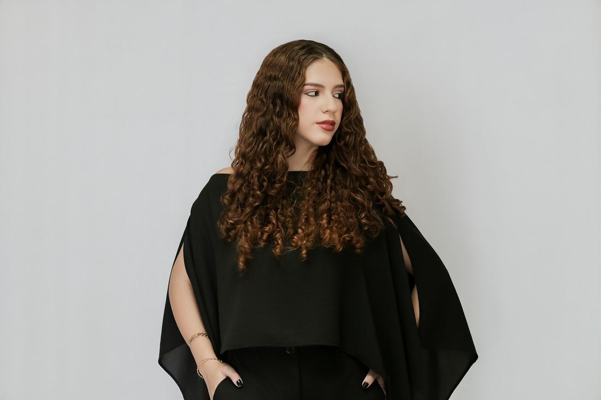
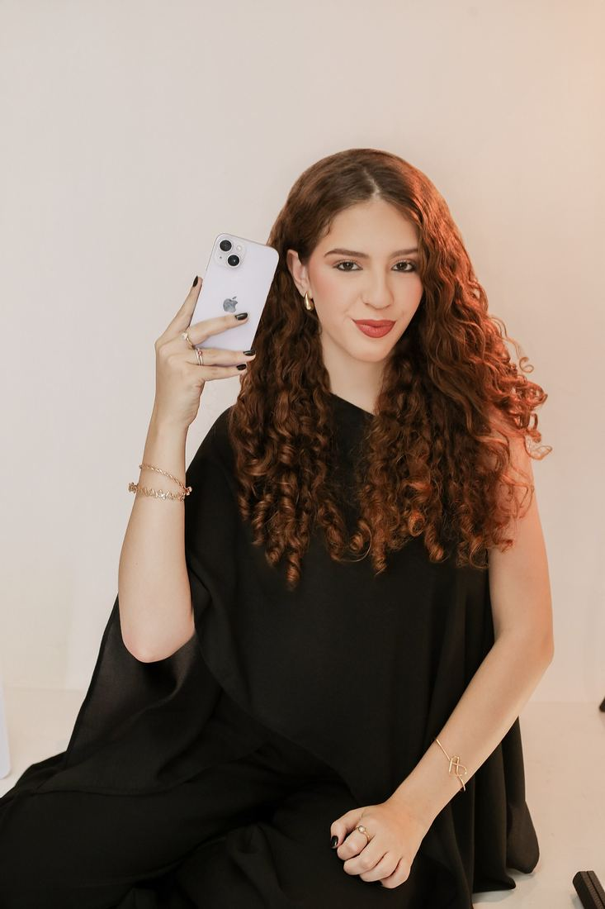
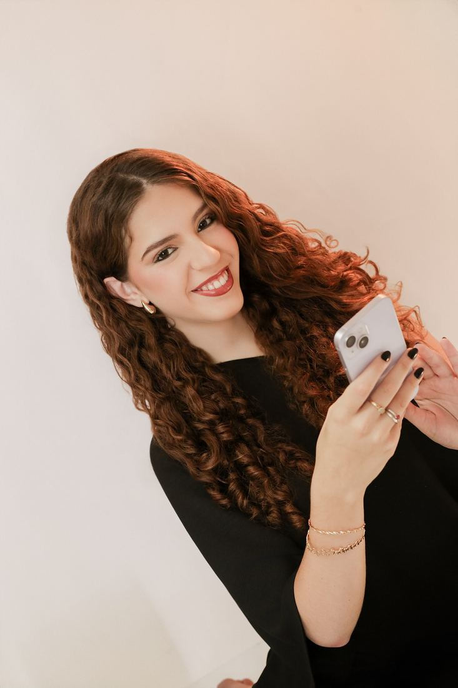
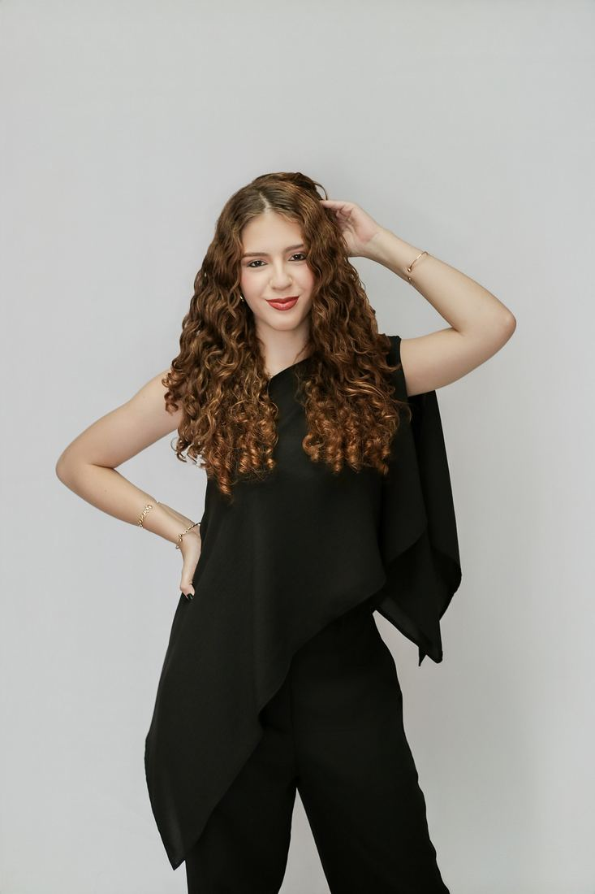
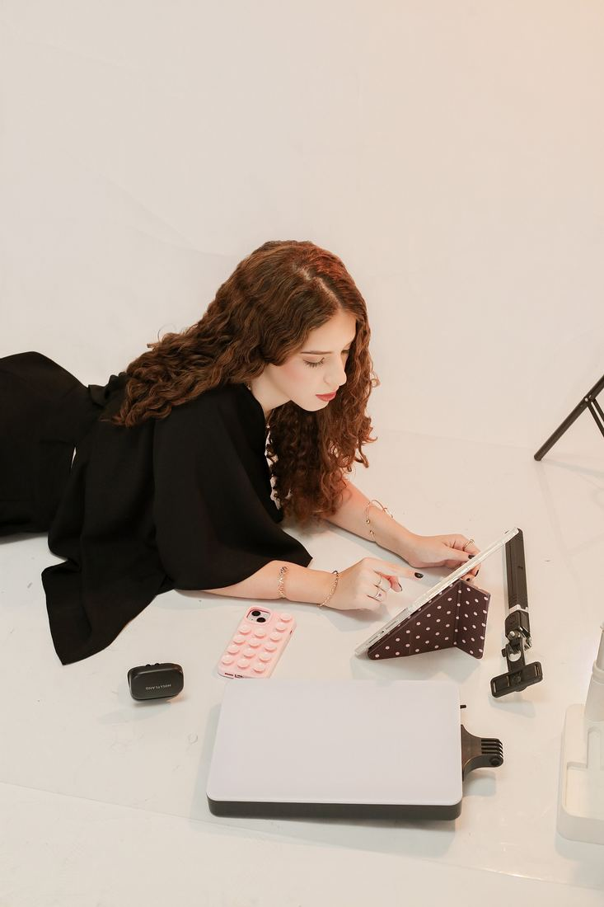

Um recorte do meu universo criativo.







Se você busca conteúdo estratégico e presença digital que valorizem sua marca e sua profissão, ou quer registrar seus eventos, bastidores, campanhas e comemorações, é só chamar.
Ana Luísa P. Salvador · @analustorymaker